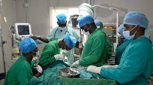

General Hospitals
Nordic medical centre
The Nordic Medical Centre (NMC) is Norwegian run and staffed by highly experienced international and Ethiopian medical professionals.

Bethzatha General Hospital
Staffed by renowned Internal Medicine specialists and equipped with state-of-the-art medical facilities and labs.

Amin General Hospital
The Amin General Hospital is Amin General Hospital is a health institution established in March, 2012.

Saint Gabriel General Hospital
Saint Gabriel General Hospital Offers comprehensive healthcare services and is known for its commitment to patient care and medical excellence.

Addis Hiwot General Hospital
Addis Hiwot General Hospital is operated under Norwegian management.

Myung Sung Christian Medical Center, ኮሪያ ሆስፒታል
Myung Sung provides round-the-clock, comprehensive diagnostic and treatment services.
Nordic medical centre
The Nordic Medical Centre (NMC) is Norwegian run and staffed by highly experienced international and Ethiopian medical professionals.
Nordic medical centre
The Nordic Medical Centre (NMC) is Norwegian run and staffed by highly experienced international and Ethiopian medical professionals.
Nordic medical centre
The Nordic Medical Centre (NMC) is Norwegian run and staffed by highly experienced international and Ethiopian medical professionals.
Book Now
BethzathaGeneralHospital
To willingly serve all those with whom we deal with professional excellence by setting high standards of ethics and integrity under which we operate.
Click on any of the services below to get a detailed description of what we offer.Radiology UNit

- CT-scan
- ultrasound
- Digital X-ray
Women Wellness Clinic
- Breast Cancer
- Age: More than 40
- Frequency: Every year...
Advanced Medical Laboratory

- Hematology
- Chemistry
- Immunoassay...
Impatient Care

- Remedial care for stroke patients
- Sport injuries
- Arthritic conditions
Nordic-Medical-Centre-Addis-Ababa
NMC offers a wide range of diagnostic and treatment services to comprehensively meet your medical needs in one convenient location. Highly experienced staff are on duty 24/7 and available to care for you and your family at all times.
Click on any of the services below to get a detailed description of what we offer.Ambulance and Emergency Call Centre

NMC ambulances, meeting international standards, are staffed by trained critical care professionals. Operating with our 24/7 Emergency Call Centre (ECC), medical advice is provided over the phone.
- Equipped to international standards
- Staffed by trained critical care nurses and drivers
- 24/7 operation in collaboration with Emergency Call Centre
Emergency Room

The 24/7 open ER at NMC handles injuries, accidents, and sudden illnesses. Collaborating with the Emergency Call Centre and ambulances, it manages diverse emergencies for all ages.
- Advanced medical equipment for diverse emergencies
- Continuous 24/7 availability of skilled medical professionals
- Collaboration with Emergency Call Centre and ambulance crew
Intensive Care Unit

The ICU has 8 beds (5 for intensive care, 3 for step-down patients), with 24/7 medical specialist availability. An isolation room is ready for immediate admission of patients with serious infectious diseases.
- Equipped with advanced medical technology
- Continuous round-the-clock medical specialist availability
- Isolation room for rapid response to infectious diseases
Amin General Hospital
NMC offers a wide range of diagnostic and treatment services to comprehensively meet your medical needs in one convenient location. Highly experienced staff are on duty 24/7 and available to care for you and your family at all times.
Video Endoscopy
- Videoscopy
- Endoscopy
- Colonoscopy
- Specialized care for stomach, intestine, and abdominal conditions
Dental Service

- Crowns, Bridges, Dentures
- Grafts, Implants, Veneers
- Whitening, Hospital Dentistry
- Orthodontics, Periodontics
Impatient Care
- Remedial care for stroke patients
- Sport injuries
- Arthritic conditions
Saint Gabriel General Hospital
Saint Gabriel is the first private hospital of its kind in Ethiopia. The hospital has paved and continues to pave the way for accessible healthcare in this region. The hospital founder, a Hungarian and American trained physician built the hospital with the vision of adapting evidence based practice in healthcare implementation. This vision has been has been brought to life by working closely with international staff and hospitals.
Ambulance Services

- Striving for top-quality patient care
- Aiming for community health outcomes among the country's best
- Over 19 years of service
- Fully equipped ER with a Korean traumatologist
Colonoscopy

- Colonoscopy: Examining the colon's interior by a gastroenterologist.
- Colonoscope: A flexible tube with a camera and light at its tip.
- Procedure: Inserted through the anus, advanced under visual control through the rectum, typically reaching the cecum.
Impatient Care
- Remedial care for stroke patients
- Sport injuries
- Arthritic conditions
Addis Hiwot General Hospital
The surgical department in Addis Hiwot Hospital provides state of art surgical services. The surgical staff has the experience and knowledge to perform procedures to treat the simplest to the most complex diseases. The department is focused on supporting the health needs of the people in our community.
Emergency Room

- 24/7 Emergency Department with a dedicated team providing high-quality and compassionate care
- Certified physicians and nurses specially trained to handle various emergencies for adults and pediatric patients
- Two patient monitors
- Certified physicians and nurses specially trained to handle various emergencies for adults and pediatric patients
ANESTHESIOLOGY
- Anesthesiologists assess and manage patients before surgery, conducting necessary laboratory tests to evaluate the respiratory system.
Myung Sung Christian Medical Center, ኮሪያ ሆስፒታል
The surgical department in Myung Sung Christian Medical Center, ኮሪያ ሆስፒታል provides state of art surgical services. The surgical staff has the experience and knowledge to perform procedures to treat the simplest to the most complex diseases. The department is focused on supporting the health needs of the people in our community.
Surgery

- First state-of-the-art hospital in Addis Ababa
- Offers high-quality and professional healthcare services
- Provides free medical services to patients in need
Emergency Room
- 24/7 Emergency Department with a dedicated team providing high-quality and compassionate care
- Certified physicians and nurses specially trained to handle various emergencies for adults and pediatric patients
- Two patient monitors
- Certified physicians and nurses specially trained to handle various emergencies for adults and pediatric patients